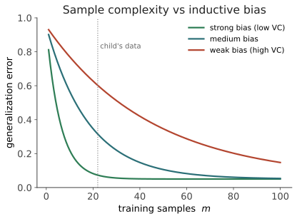

本页目录
意义 II · 可学习性之争
对标：Gold 1967、Valiant 1984 (PAC)、Chomsky 刺激贫乏、Clark & Lappin《Linguistic Nativism and the Poverty of the Stimulus》、🔗 grad-math slt 线 ｜ 前置：ling-02、mean-01 ｜ 证据地位：定理【实】，其对语言习得的适用性【争】——这是轴 I 从口水仗升级为数学问题的地方。 这一页把"语言能不能从数据学到"从立场之争，变成可证明、可实验的问题。三样工具：Gold 的悲观定理、PAC 的乐观框架、以及连接两者的核心概念——归纳偏置。学完你会明白：刺激贫乏论证在形式上成立，但它证明的东西比 Chomsky 需要的弱。
1. 把问题问准：什么叫"可学习"
"儿童能学会语言"要变成数学命题，先定清楚：学习者（一个把数据映射到假设的算法）、数据（看到什么：只有正例？有无负例？有无分布？）、目标（学到什么算成功：完全一致？近似？）、资源（多少样本、多少算力）。
关键洞察（贯穿本页）：可学习性不是语言的内在属性，而是〈假设空间 + 数据类型 + 成功判据〉三者的联合属性。换掉任何一个，结论就翻盘。"语言学不学得会"这个问题本身是病态的——必须补全这三项才有答案。 强先天论与涌现论的很多争执，其实是在偷偷用不同的三元组。
2. 悲观定理：Gold 的"极限中辨识"
Gold 1967：学习者逐个看正例，每步猜一个语法，若某步后永不改猜且猜对，即"极限中学会"。结论令人沮丧——
任何包含所有有限语言 + 至少一个无限语言的类（"超有限"类），都无法仅从正例在极限中学会。
正则语言、上下文无关语言……全都不可仅凭正例学会。因为：看到有限个句子，你永远无法排除"语言恰好只有这些句子"的过度拟合假设，没有负例来纠正过度泛化。
先天论者的读法：儿童几乎只接触正例（没人系统给负例），却学会了——所以成功必然依赖强先天约束（把假设空间预先砍到很小）。这就是刺激贫乏的形式版，而且在 Gold 的框架里，它是对的。
但是（本页第一个转折）：Gold 的框架极端严苛且不现实——
- 它要求最坏情况、完全一致（一个句子都不能错），而人只需近似；
- 它无视概率：真实数据不是敌手挑的最坏序列，而是从某个分布采样的；
- 它不许出错概率。放宽任何一条，悲观结论就松动——这把我们推向 PAC。
3. 乐观框架：PAC 与"近似地、大概率地对"
Valiant 的 PAC（Probably Approximately Correct）换了成功判据（🔗 grad-math slt 讲透）：不要求完全一致，只要大概率（\(1-\delta\)）学到近似正确（误差 \(<\epsilon\)）的假设，且样本量多项式可控。核心定理把可学习性量化成一个数——假设空间的复杂度（VC 维 \(d\)）：

读法（本页核心）：学得会 = 样本量 \(m\) 够覆盖假设空间的复杂度 \(d\)。于是"刺激贫乏"被翻译成一个定量问题：给定儿童实际接触的数据量 \(m\)，要学会语言，假设空间的复杂度 \(d\)（即先天偏置的强度）必须小到多少？ 争论从"有没有先天"变成"先天偏置要多强"——一个能估、能测的数，不再是立场表态。
4. 归纳偏置：争论的真正焦点
没有免费的午餐：不带任何偏置的学习者无法泛化（任何与数据一致的假设都同样可选）。所以"要有归纳偏置"双方都同意——真正的分歧只剩两点：
- 偏置有多强（假设空间砍到多小）？
- 偏置是不是语言专用（一套 UG 蓝图），还是通用的（序列学习、递归、简洁性偏好、社会认知）？
这才是轴 I 的精确焦点（承 ling-02 思考 3、ling-03 思考 1）。可能的立场谱：
| 立场 | 偏置强度 | 语言专用？ | 代表 |
|---|---|---|---|
| 强先天论 | 强（UG 参数） | 是 | Chomsky |
| 温和先天论 | 中 | 部分 | 多数当代习得研究 |
| 涌现/连接主义 | 弱–中（通用架构偏置） | 否 | Elman、Christiansen |
| 纯经验论 | 极弱 | 否 | （少有人持极端版） |
注意：神经网络不是"无偏置白板"——其架构（卷积的局部性、Transformer 的注意力、循环的时序）本身就是强归纳偏置。所以"神经网络能学会语言"不证明"无偏置可学"，只证明"这种（通用、非语言专用的）偏置够用"。这个区分极其重要，是理解 LLM 对先天论意味着什么的关键，别搞错。
5. LLM 把这场争论逼到墙角（但没终结）
涌现派的新弹药：LLM 从纯语料（正例为主）学到了极复杂的语法，无内建 UG——这似乎是"刺激贫乏被高估"的存在性证明：足够数据 + 通用偏置，确实能长出语法。Gold 的悲观在概率 + 分布 + 近似的现实设定下，被 PAC 式的成功绕过了。
先天派的三条反击（都成立，都还没被驳倒）：
- 数据效率鸿沟：LLM 需要 \(10^{12}\) 级 token，儿童只需 \(10^{7\text–8}\)——差 4~5 个数量级。"能从数据学"不等于"能从儿童那么少的数据学"（承 ling-03 思考 3）。这道鸿沟是先天派现在最硬的阵地。
- 架构偏置不透明：Transformer 学会语法，也许正因它的注意力偏置恰好匹配语言结构——这不反而支持"需要合适的（也许某种意义上'先天'的）偏置"吗？
- 学习目标不同：儿童在多模态、交互、社会中学（线四），LLM 只在文本里学——两者不可直接对比。
所以诚实的结论：LLM 削弱了"结构完全不可从数据学"的强主张（【实】层面松动了 Gold 式悲观），但没有解决"人类如何用那么少的数据学会"——这道数据效率之缝，正是你研究里一个具体、可攻的问题。
6. 要点与思考
思考 1（把口水仗变成数字） 本页最该带走的方法：遇到"X 能不能从数据学"，别答是/否，先补全〈假设空间、数据类型、成功判据、样本量〉，再问"要学会，偏置需多强"。这套把定性争论化成可估参数的动作，本身就是研究能力——它也正是你在 Medusa 里把"能不能预测"变成"forward-only 可结算命题"的同一种纪律。
思考 2（数据效率是你的题） 儿童 vs LLM 的 4~5 个数量级效率差，是当前最有价值的开放问题之一。可能的解释：更强/更对的归纳偏置、多模态接地（线三 mean-03）、主动交互采样、课程式学习……每一个都是可做的子课题，而且直接落在你"语言如何促成人类智能"的靶心上。
思考 3（可学习 ≠ 已学会那样） 就算证明"语法在原则上可从数据学"（可学习性），也不等于"人脑就是这么学的"（机制）。可学习性是必要性层面的清障，机制是另一层（线五神经证据）。别把'能学'滑成'人这么学的'——这是本领域最常见的越界，也是你审别人论文时最该警惕的一跳。\(\blacksquare\)
下一页：意义 III——符号接地问题。分布能学到结构（mean-01），也许在原则上可学（mean-02）——但学到的符号关于世界吗？还是一个自我指涉的封闭网络？章鱼、中文房间、以及"意义需要身体吗"，在这里正面登场。这是甲问与乙/丙问的分界石。